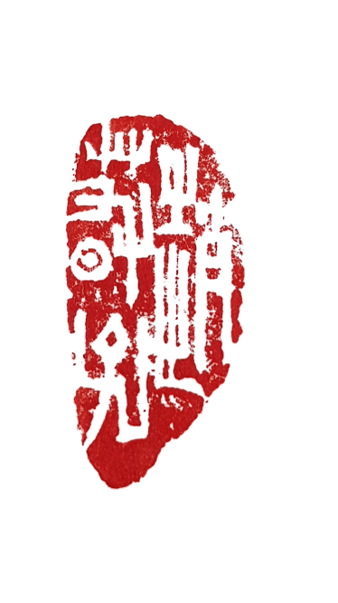
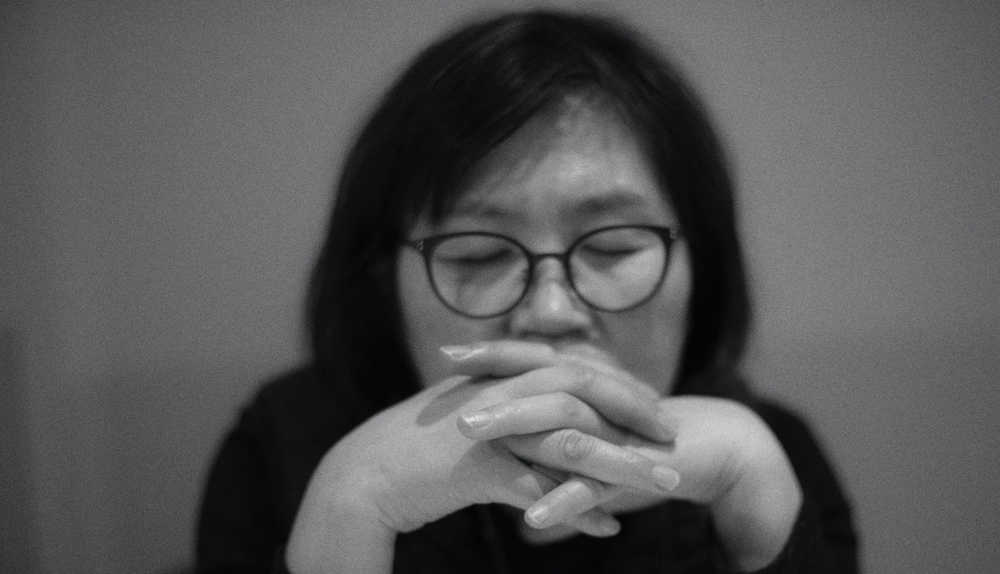

Cho Choon Ja
The Color of Korea
About
Artwork
Review
Contact

Cho, Choon-Ja
Committee of Korean Artist Association
Oriental Arts Research Committee
Korea Figure Painting Group Member
ART MANTORS Member
Individual
2021
invited Exhibition Art Space HADEN session1-2
2018
invited Exhibition JOYOUNG SPACE session1-4
2015
invited Exhibition Government Complex Seoul Gallery
2013
invited Exhibition Gallery ART PLAZA
2011
invited Exhibition Lady Palace
invited Exhibition Gallery LEE SEOUL
2010
Solo Exhibition Woo Duk Gallery
Solo Exhibition MayJune Gallery
Choon CHoo Art Festival, Hangaram Art Museum-Seoul Arts Center
2009
JangEunSun Gallery, Seoul, Korea
2006
The 6th Woljeon ART Prize, Dongsanbang Gallery, Seoul, Korea
Gallery Hue, Seoul, Korea
2003
3nd Solo Exhibition Baik song Art Gallery, Seoul, Korea
1997
2nd Solo Exhibition Seoul Gallery, Seoul, Korea
1986
1st Solo Exhibition Yoon Gallery, Seoul, Korea
Group & invited
1980 - 2020
250 Exhibitions(home and abroad)
1981 - 2017
Choon Choo Fine Arts Exhibition
1998 - 2020
Korea Figure painting Group Exhibition
2012 - 2019
ART MENTORS Exhibition 15th
1997 - 2020
Hong ik Exhibition by Female Artists Exhibition
2015
The 70th anniversary of liberation of Republic of Korea Art Festival
2012
HongKong Contemporary2012
Korea Figure emblem Exhibition Gallery Wooduk
Exhibition of Professor korean national University
2011
LA ART FAIR, U.S.A
NY ART FAIR, U.S.A
SOAF(SEOUL OPEN ART FAIR,COEX,SEOUL)
The Western Art Show 2011, LA, U.S.A
AAF Art Fair Singapore, Singapore
Miami Art Fair, FL, U.S.A
J.W Marriott Hotelfair(Seoul)
2010
SYDNEY ART FAIR, Sydney, Australia
Incheon Global Cities Art Exchange Exhibition, KOREA
Korea Figure emblem Exhibition Gallery Wooduk
Painting of 23 Artists, GAGA Gallery
2008
Korea Figure Painting Group Exhibition, Topo House Gallery
Hong-ik Exhibition by Female Artists
Invited Artists Exhibition Sejong Gallery
Invited Artists Exhibition Inha Gallery
2007
Invited Artists Exhibition, Topo House
Invited Artists Exhibition, Jine JeNO Gallery
Pleasure of Reading Exhibition, Nowon Culture Art Center
Korea Figure painting Group Exhibition, Seoul Gallery
Korea-Ghana, 30 Years of Diplomatic Relationship Exhibition
2006
Korea Figure painting Group Exhibition, Gallery Sang
Korean painting New Milennium Exhibition, Gong-pyung Art Center, Seoul
2005
Hanbyuck Coterie Exhibition, Gong-pyung Art Center, Seoul
Korean painting 60lady artists Exhibition, Kyoung Hyang gallery
Korea Figure painting Group Exhibition, Soo gallery
Exhibition of Korean poems contained on the fans
Hong-ik Exhibition of Korean painting by Female Artists, Seoul, Museum of Art
The 10Korean artists Exhibition, Soo gallery
2004
Seoripul Exhibition, Yang pyung gallery
The Women's Association Exhibition for Korean painting, Sejong Center
Korean women Artists Invitational Exhibition, LA Council
Hong-ik Exhibition of Korean painting by Female Artists, Sejong Center
Korean contemporary painting Exhibition, Gallery Watatu, Kenya
2003
The Women's Association Exhibition for Korean painting, Sejong Center
Hong-ik Exhibition of Korean painting by Female Artists, Marronnier Art Center
Korea Figure painting Group Exhibition, Sejong Center
2002
Invited Artists Exhibition of Korea Figure painting Group, Modern Gallery
KOWACA International Art Festival, In-sa Art Plaza Gallery, Seoul
Alumni Exhibition of Hong-ik University, Gong-pyung Art Center, Seoul
Hong-ik Exhibition of Korean paiting by Female Artists, Moro Gallery
Meeting Exhibition of traditional Art painting and Fine Art, Choo-je Gallery
Hanoi Center of Information & Exhibition, Hanoi
Hong-ik Exhibition of Korean painting by Female Artists
Contemporary Art Center, Seoul
Korea Figure painting Group Exhibition, Seoul Gallery, Korea
Young deung po Culture and Art Hall, Seoul
Lotte Gallery Nude32, Lotte Gallery, Seoul
2001
Hanbyuck Coterie Exhibition, Dong-Duk Art Gallery, Seoul, Korea
Invited Artist Exhibition of Korea figure painting Group, Born Art Gallery
Open Art space, Duk soo pallace
2000
All India Fine Arts & Crafts Society, New Delhi
Korea Figure painting Group Exhibition, Seoul Gallery, Seoul
Gallery Art Fair, Johyung Gallery, Seoul, Korea
The Exchange Exhibition of Art Between Korea, China & Taipei
1999
Hong-ik Exhibition of Korean painting by Female Artists
AIFACS Gallery -New Delhi, India
Exhibition of principal occupation artists association, Seoul City Art Center
Korea Figure painting Group Exhibition, Seoul Gallery
Won so Hoe, Kwang ju, Korea
1998
The Exchange Exhibition of Art Between Korea & China, Wungyoungkung Art Gallery, Seoul
Hong-ik Exhibition of Korean painting by Female Artist, Dong-Duk Art Gallery
Exhibition for Establishing Korean's Contemporary Art, Seoul City Art Center
Alumni Exhibition of Hong-ik University, Gong-pyung Art Center, Seoul
Korea Figure painting Group Exhibition, Baik sang Center, Seoul
The Exchange Exhibition of Art Between Korea, China, Taipei
1997
Exposition inaugural Art's Contemporary Korea-Madrid, Madrid, Spain
Hong-ik Exhibiiton of Korean painting by Female Artists, Il Min Art Center
Alumni Exhibition of Hong-ik University, Hong-ik Univ. Contermporary Art Center, Seoul
1996
The 60th anniversary Exhibition of the Foundation of Huso art association, Seoul Art Center, Seoul
1995
Spring Light Exhibition, Segye Gallery
Art association Exhibition, Seoul City Art Center, Seoul
The 14 Artist' Small paintings Exhibition, Segye Gallery
Korea Women Artist' Festival 95, Seoul City Art Center, Seoul
1992
The 10 Korea Artists' pleasure Exhibition, Bung Sei Gallery
The 11 Korea Artists' Exhibition of spring light, Mu jin Art Gallery
The 6 Korea Artists' Expression Exhibition of painting, Yea il Art Gallery
Awards & career
2006
The 6th Woljeon ART Prize
2002
The 1st Choon Choo ART Prize
2000
The 19th National Grand Art Exhibition of Korea, Jonor
1986
Choong-Ang Grand Art Exhibition of Korea selected
1984
The 1st Exhibition of Huso Art association special prize
1985
The 2nd Exhibition of Huso Art association predominant prize
1982 - 1988
The 1st~the 7th Grand Art Exhibition of Korea, Accept
1980
The 29th Korean National Art Exhibition, Accept
2013
Sungnyemun Gate investigation committee
2016
advisor of Dancheong (traditional multicolored paintwork on wooden buildings) in Wolseong District (Gyeongju Historic Area)
1984 - 2013
lecturer of Fine Art college at Kang-nam University, Busan University, Chang-won University
Kyunggi University, Hong ik University, Korea University
Lecturer of Korean national Univerrsity of Cultural Heritage
Chairman of Hongik Women's Korean Painting Association
1982
M.F.A Graduate school of fine Arts, Hong-ik University, Korea
1980
B.F.A College of fine Arts, Hong-ik University, Korea